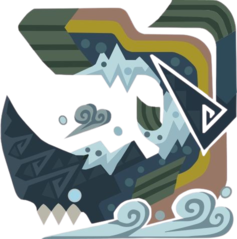

Beotodus

Piscine Wyvern
Un wyvern nadador que usa su afilada cresta para cortar el terreno
congelado, nadando así libremente por la nieve. Se le puede ver a
menudo cubriendo de nieve a sus presas usando las aletas de sus patas.
Apariencia
El Beotodus posee un cuerpo idéntico al Lavasioth y al Jyuratodus,
con los que está estrechamente emparentado. Su cabeza, no obstante,
está armada con un gigantesco cuerno que apunta hacia arriba y que
le sirve para moverse por la nieve.
Ecología
El Beotodus es un monstruo agresivo que caza a sus presas atacando
por sorpresa desde la nieve y utilizando la nieve que lo recubre
para congelarlas. Su cuerno le permite atacar y moverse por el
terreno helado con gran habilidad.